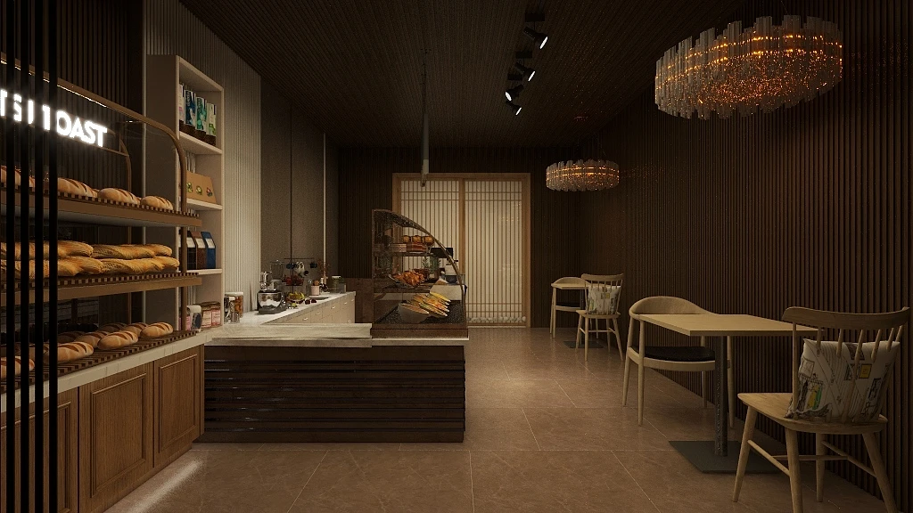
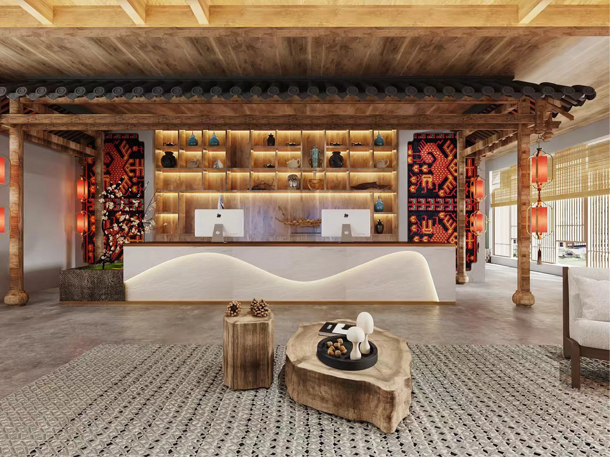

弹性 vs 线性
Easingspring
expo
linear
同样的距离与时长，观感完全不同。真实世界没有匀速运动，所以线性总显得廉价。
我做界面、做角色、也做空间。
它们其实是同一件事——设计人与事物相遇的那一刻。
一次点击、一个眼神、一段推门而入的动线，本质上都是「反馈」。 我关心的始终是同一个问题：人靠近它的时候，它如何回应？
所以我的作品跨越三种尺度——屏幕、角色、空间。
它们用完全不同的材料，回答同一道题。
尺度越大，反馈越慢，但机制是一样的：先建立预期，再给出确认。
最小的尺度，最密的反馈。以 8pt 网格与状态机组织信息，让每一次触摸都被确认。
让品牌有一张会笑的脸。从文化母题里长出形象，再用表情与动作建立关系。
最慢的交互。用光、材质与动线安排身体的节奏，人在其中停留、转身、坐下。
横跨交互、IP、空间、
广告与 AIGC 工作流
为「养宠新手」设计的一站式陪伴产品。把喂养记录、同城社交与用品商城收进一只猫爪形的导航里，让照顾一只小动物这件事变得轻盈。
把醒狮的鼓点和早茶的热气揉进一个角色：一只从茶杯里醒来的小狮童。含标志、三视图、表情系统与衍生手办。
让 IP 走出包装，占领早晨的城市。地铁灯箱、茶楼实体互动与一支「唤醒」主题的社交传播。

一间 60㎡ 的街角店。用一道枯山水把排队与堂食分开，让等待也成为风景的一部分。

把老屋的木梁与瓦檐留在室内，再放进一张会流动的前台。夯土、原木与红灯笼，构成一段从村口到房间的缓坡。
为设计师而非提示词工程师设计的 AI 工具。把「生成」变成可回溯的节点，让灵感有版本、有分叉、有可控的手感。
一只知道水温的茶壶。把冲泡的火候变成一圈可以旋的光，屏幕只在需要时出现——最好的界面是没有界面。
下面每一块都是真实运行的代码，
不是截图。请把光标放上去。
同样的距离与时长，观感完全不同。真实世界没有匀速运动，所以线性总显得廉价。
按钮在光标靠近时轻微迎上来。位移不超过 12px，却让点击命中率与「被回应感」明显上升。
高亮块不是消失再出现，而是滑过去——它替用户记住了「我从哪里来」。取自趣宠的底部导航。
位移随手指递减，松手后弹回。阻尼曲线是界面「有重量」的来源。可拖动。
数字逐位过渡而非直接替换，让变化「被看见」。等宽数字避免宽度抖动。
从落点扩散的涟漪确认了「系统收到了」。在趣宠里它是一枚小小的爪印。
养宠新手怕的不是喂不饱，是不知道自己做得对不对。定义问题的方式，决定了后面所有的形式。
信息层级、动线、状态机。结构对了，视觉只是把它说清楚；结构错了，再美也救不回来。
静态稿骗得过评审，骗不过手。我用代码把方案跑起来，在真实的延迟与惯性里做判断。
一帧的时长、一像素的对齐、一次回弹的过冲量。用户说不出哪里好，但他们感觉得到。
一名在广州工作的交互设计师。喜欢把复杂的东西整理清楚， 也喜欢在整理干净之后，再放回一点点温度。
我的训练跨了两条路：一边是界面与动效，一边是空间与材质。 这让我习惯用「身体尺度」去想数字产品——按钮多大才好按， 一次转场应该走多久，就像走廊多宽才不局促。
我直接在代码里做设计。不是为了当工程师，而是因为交互的手感 只能在真实的运行环境里判断。这个作品集本身就是这么做出来的。